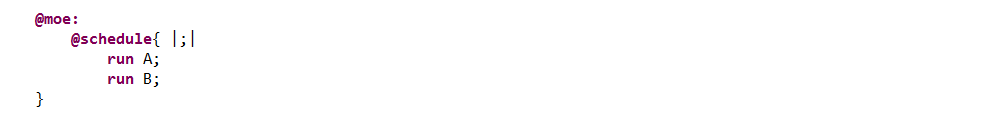

Its evaluation terminates only if both P and Q terminate. Otherwise, no effects are preserved, and we go back to the initial context.
Considering 2 processes : P and Q, with strong sequence we execute first P and then Q (non-reflexive operation):
Applying this on our most basic example, the "@moe:" section looks like :
And exploring the different paths with the symbolic engine (3, 4 and 5 evaluation steps) gives us (here, as all transitions cannot do anything else than succeeding, each step integrates the effect of both the automata's transitions simultaneously) :